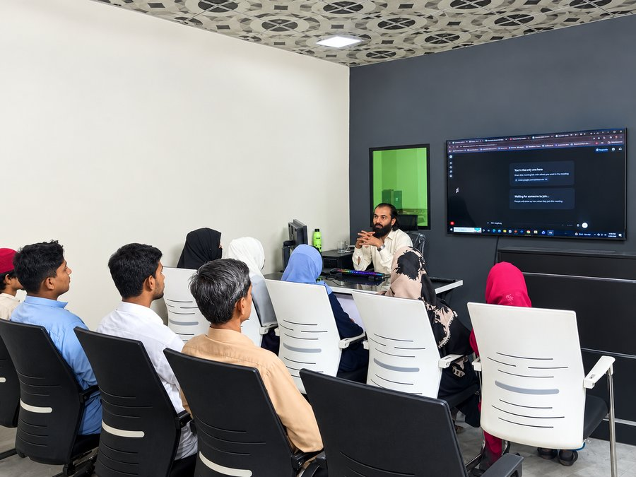
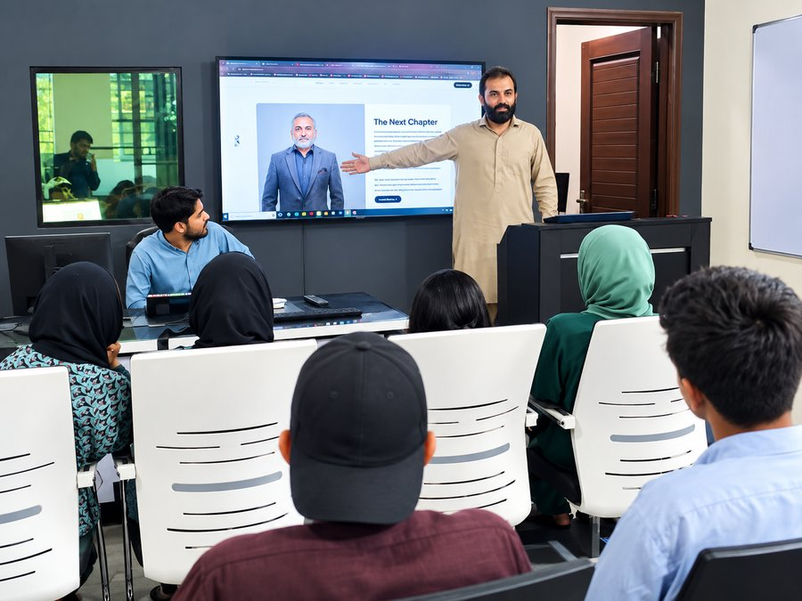
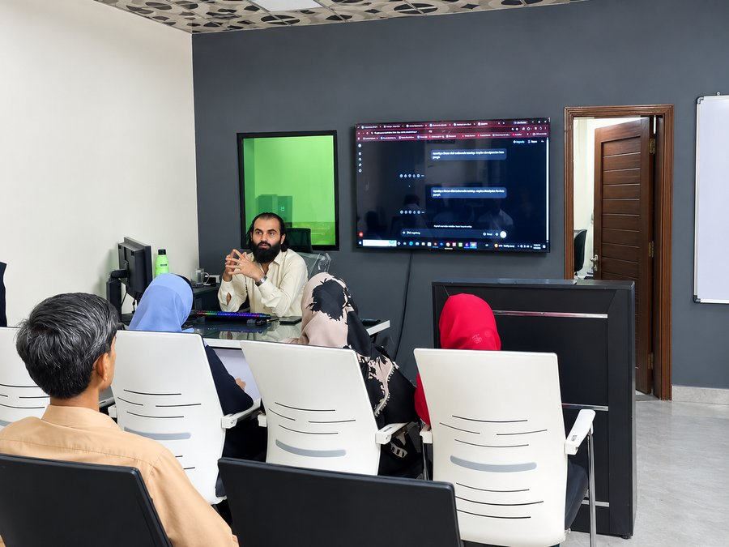
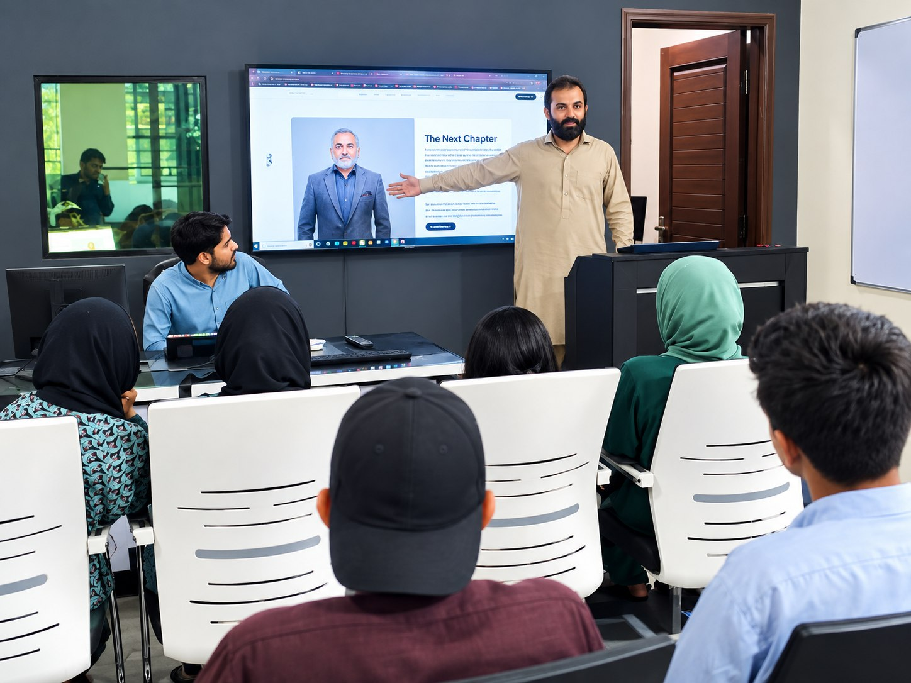
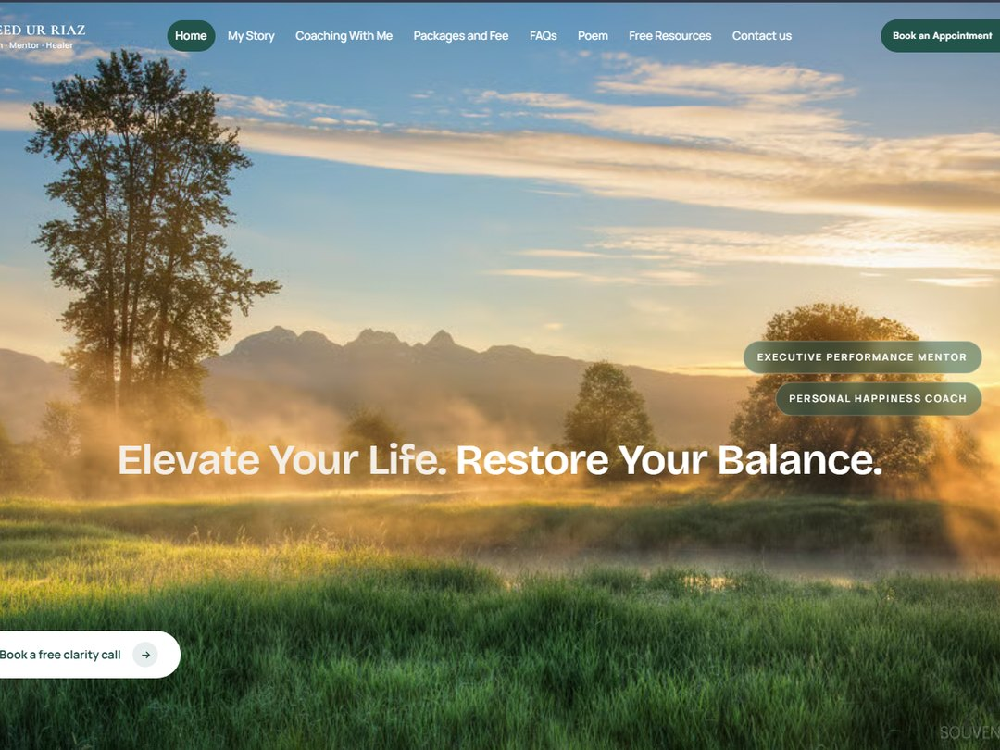
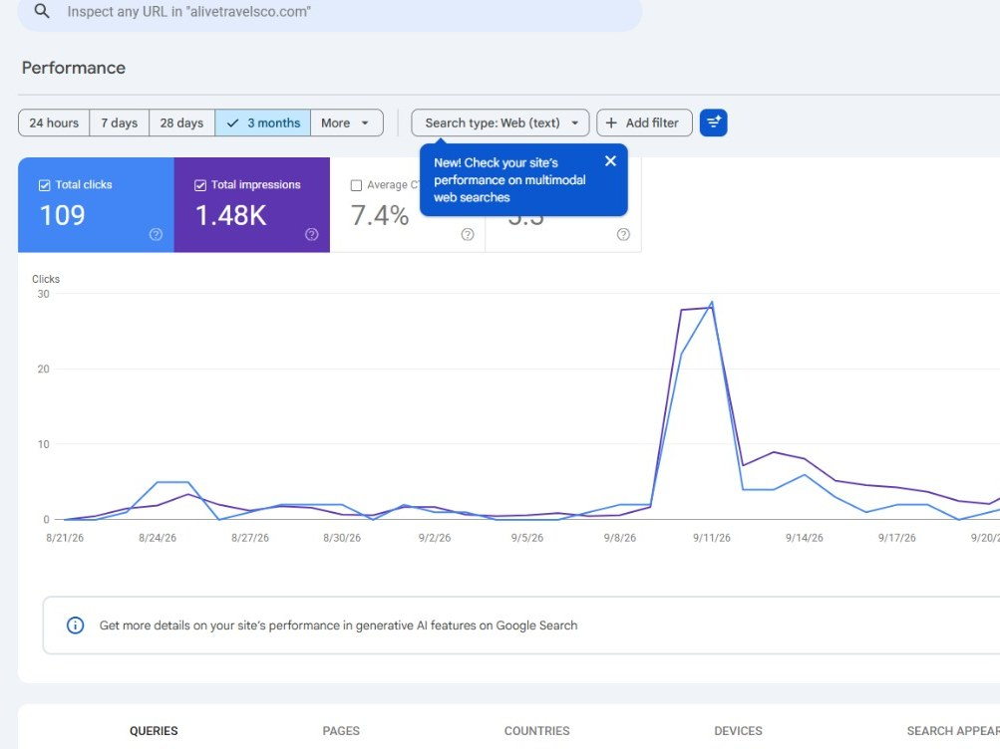
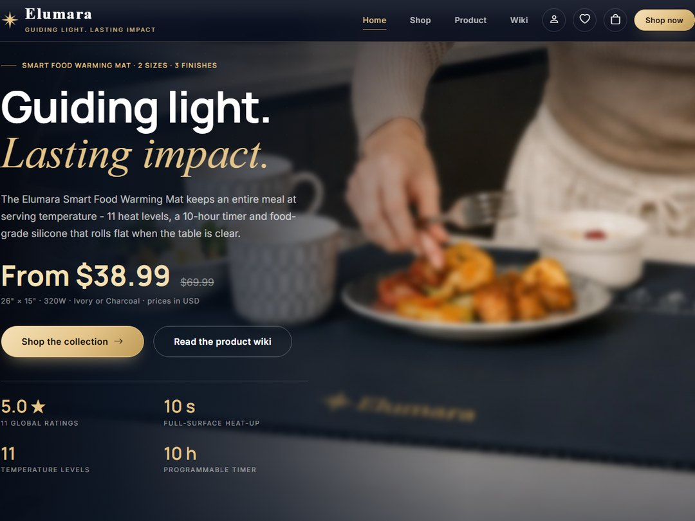
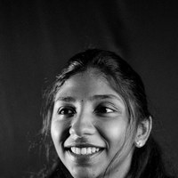

★★★★★
"Digitify completely transformed our online presence. Their attention to detail and strategic approach is unmatched in the industry."
Michael R.CEO, TechFlow
Digitify is a premium digital marketing agency delivering exceptional digital experiences that transform businesses and drive measurable results.
Every project represents a unique success story built through creativity, strategy, and innovation.
We offer a comprehensive suite of digital services designed to elevate your brand to the next level.
Get in touchFast, accessible front-end builds with clean code and a performance budget that holds.
Positioning, identity and messaging that give you a defensible point of view.
The visual and editorial standard every asset gets reviewed against before it ships.
SEO, paid and lifecycle campaigns measured against pipeline, not impressions.
Motion systems, product animation and edit that make the work feel expensive.
Interface and experience design, from first wireframe to shipped component library.



At Digitify, we blend creativity with strategy. Based in Islamabad, our team of experts is dedicated to pushing the boundaries of digital innovation. We don't follow trends; we set them.
Strategy, design and motion pulled into one system. The work does not just look sharp, it moves the number it was built to move.
We're a team of strategists, designers, and developers who believe in the power of purposeful digital experiences. Every brand has a story. We help you tell yours in a way that connects, converts, and lasts.

Headquarters Location
Explore some of the latest projects we've crafted for ambitious businesses. Every project combines strategy, creativity, and technology to deliver measurable results.

Web Design
A coaching site for an executive mentor and happiness coach with a free clarity call.

SEO
Search performance for alivetravelsco.com. 1.48K impressions and a 7.4% CTR in three months.
Branding
Logo and visual identity for a group tours, air tickets and visa services brand.

eCommerce
An online store for a smart food warming mat. 11 heat levels and a 10-hour timer.
Web Design
A travel booking site for group tours, air tickets, and visa services.
Every engagement starts with the outcome, then works backwards through craft. No decks that go nowhere. Only work that ships.
Trusted by businesses that value quality, reliability, and exceptional service. Discover why clients continue to choose us.
"Digitify completely transformed our online presence. Their attention to detail and strategic approach is unmatched in the industry."
"The team delivered exactly what we needed. Professional, creative, and results-driven. Highly recommend for any digital project."
"Working with Digitify was a game-changer. Our conversion rates doubled within the first month of launching the new site."
"Our online store revenue increased by 150% after Digitify redesigned the entire customer journey. Truly outstanding work."
"Professional, responsive, and incredibly skilled. Digitify helped us launch our SaaS platform ahead of schedule with a flawless design."

From high-converting campaigns to scroll-stopping creative content, we help ambitious brands increase visibility, build trust, attract customers, and generate measurable business growth without wasting time or budget.
Turn underperforming ad campaigns into reliable revenue generators with data-driven strategies.
Create a memorable brand identity that builds trust and leaves a lasting impression.
Premium photos, videos, and animations that captivate audiences.
Develop engaging content that drives meaningful customer interactions.
Behind every successful campaign is a passionate team of creative thinkers, marketing strategists, designers, developers, and digital growth experts dedicated to helping brands grow online.
Visionary entrepreneur helping businesses scale through digital marketing, branding, and business growth strategies.
Leads branding, UI/UX design, visual storytelling, and creative campaigns that leave lasting impressions.
Expert in technical SEO, keyword research, content marketing, and organic business growth.
Creates engaging social media strategies, viral content, and audience-focused campaigns across all major platforms.
Builds high-performance websites, landing pages, and conversion-focused digital experiences for modern brands.
Certified Industry Professionals
Successful Marketing Campaigns
Businesses Served Worldwide
Delivering Digital Growth
Whether you're looking to grow your business, launch a new project, or simply have a question, our team is here to help. Reach out today and we'll respond with the right solution for your needs.